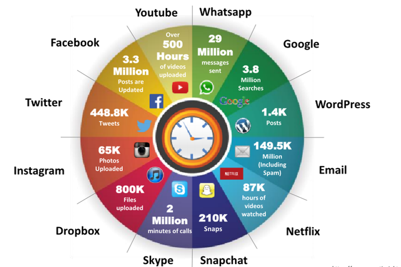

Author : Manas Ramesh
The Internet has become an integral part of modern business and personal life, as it helps in gaining information easily. Businesses and individuals rely on the Internet for various purposes such as browsing for content, social networking, communicating, shopping, downloading, and chatting, etc. Every one in the world is connected to each other in the cyber world. They have their own privet spaces there. Which means every single individual have a home in internet containing personal informations , banking details , confidential files , etc . So those should be secured from criminals . So the concept cyber security arrises 
The above given diagram shows a simple example for "What happens online in 60 seconds" . So to protect individuals or companies or something in internet from criminals (black-hat hackers , cyber terroriests etc ) The use for ethical hackers arrises. Lets discus what is ethical hacking on coming topics
Hacking is an attempt to exploit a computer system or a private network inside a computer. Simply put, it is the unauthorised access to or control over computer network security systems for some illicit purpose. Description: To better describe hacking, one needs to first understand hackers
.............................................................................................................................................................................................................................
A hacker is a person, who breaks into a system or network without any authorization to destroy, steal sensitive data, or performs malicious attacks. Hacker is an intelligent individual with excellent computer skills, along with the ability to create and explore into the computer’s software and hardware. Usually a hacker would be a skilled engineer or programmer with enough knowledge to discover vulnerabilities in a target system. She/he is generally a subject expert and enjoys learning the details of various programming languages and computer systems. For some hackers, hacking is a hobby to see how many computers or networks they can compromise. Their intention can be either to gain knowledge or to poke around to do illegal things. Some do hacking with malicious intent behind their escapades, like stealing business data, credit card information, social security numbers, email passwords, etc
.............................................................................................................................................................................................................................
Hackers usually fall into one of the following categories, according to their activities
Black hats are individuals who use their extraordinary computing skills for illegal or malicious purposes. This category of hacker is often involved with criminal activities. They are also known as crackers
White hats or penetration testers are individuals who use their hacking skills for defensive purposes. These days, almost every organization has security analysts who are knowledgeable about hacking countermeasures, which can secure its network and information systems against malicious attacks. They have permission from the system owner.
Gray hats are the individuals who work both offensively and defensively at various times. Gray hats fall between white and black hats. Gray hats might help hackers in finding various vulnerabilities of a system or network and at the same time help vendors to improve products (software or hardware) by checking limitations and making them more secure.
Suicide hackers are individuals who aim to bring down critical infrastructure for a “cause” and are not worried about facing jail terms or any other kind of punishment. Suicide hackers are similar to suicide bombers, who sacrifice their life for an attack and are thus not concerned with the consequences of their actions.
Script kiddies are unskilled hackers who compromise systems by running scripts, tools, and software developed by real hackers. They usually focus on the quantity of attacks rather than the quality of the attacks that they initiate
Cyber terrorists are individuals with a wide range of skills, motivated by religious or political beliefs to create fear of large-scale disruption of computer networks
State sponsored hackers are individuals employed by the government to penetrate and gain top-secret information and to damage information systems of other governments
Hacktivism is when hackers break into government or corporate computer systems as an act of protest. Hacktivists use hacking to increase awareness of their social or political agendas, as well as themselves, in both the online and offline arenas. They are individuals who promote a political agenda by hacking, especially by defacing or disabling websites. Common hacktivist targets include government agencies, multinational corporations, or any other entity that they perceive as a threat. It remains a fact, however, that gaining unauthorized access is a crime, irrespective of their intentions.
.............................................................................................................................................................................................................................
Ethical hacking is an authorised practice of bypassing a system security to identify the loopholes or vulnerabilities in a system security. In ethical hacking they have legal permision from the individual or organization to hack in their system. The vulnerabilities or loopholes found by ethical hackers will be patched or solved by the organization . This is the best way to prevent cyber security atatcks .
.............................................................................................................................................................................................................................